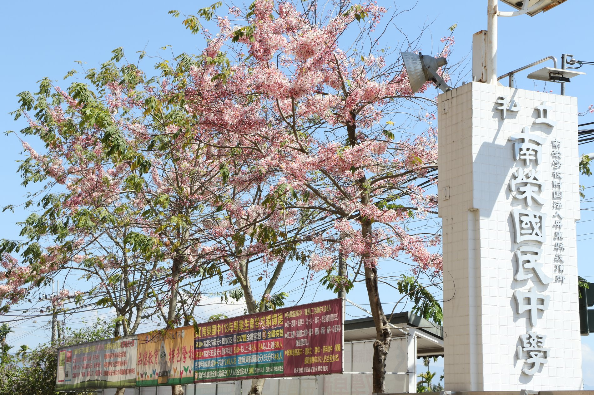
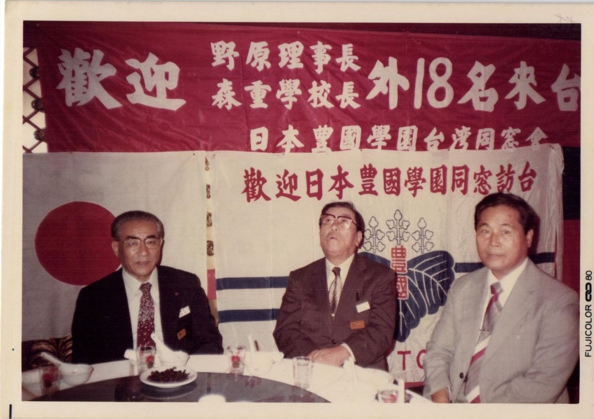
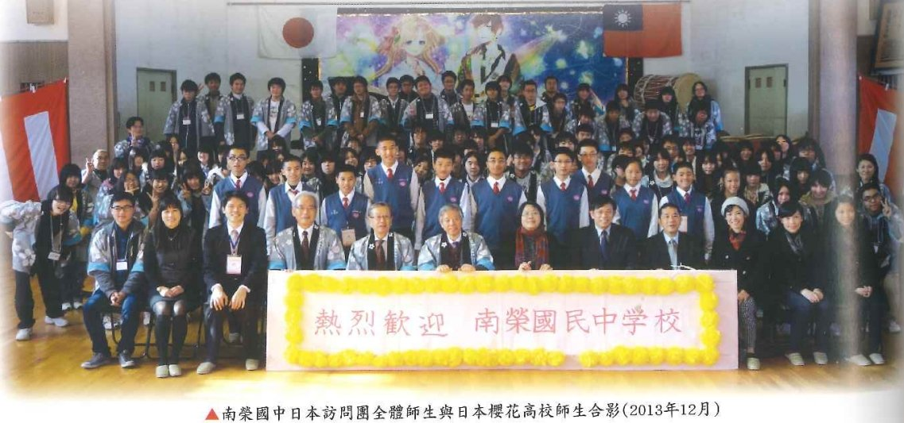
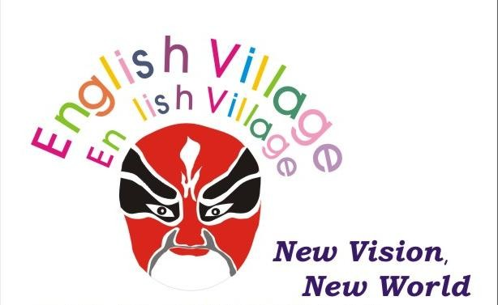
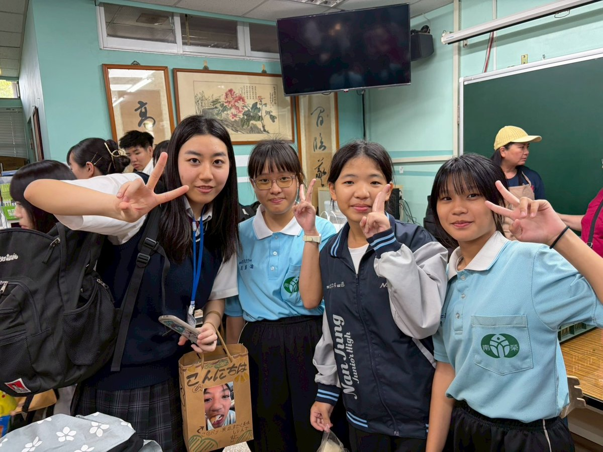
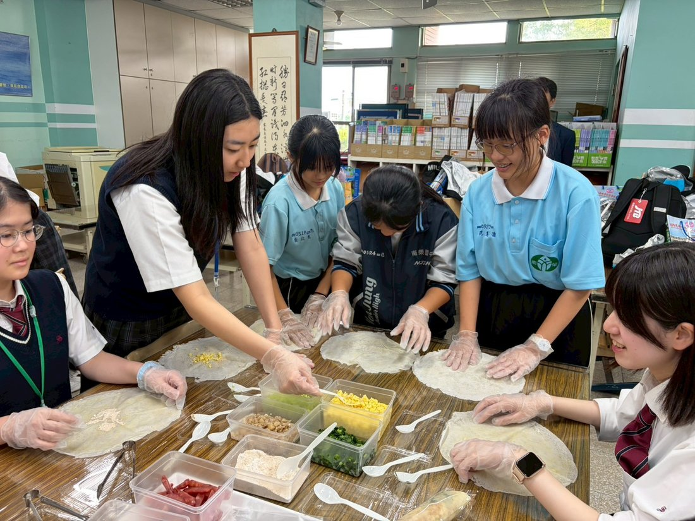

A Friendship Across the Sea海を越えた友情
For more than a quarter of a century, Nan Jung and its sister school in Japan have crossed the sea each year to learn from one another — a bond that began in the founder's own student days.
四半世紀を超えて、南榮と日本の姉妹校は毎年、海を渡って互いに学び合ってきました。その絆は、創立者の学生時代にまでさかのぼります。

Where it began原点
Founder Chen Yao-huo studied at Toyokuni Gakuen in Japan as a young man. The friendship he formed there reached across the decades: Japanese educators came to Kanding, Taiwanese students traveled to Japan, and a lasting bond between the two countries took root — long before it was ever written into an agreement.
創立者・陳耀火先生は若き日に日本の豊国学園で学びました。そこで結ばれた友情は、幾十年もの時を越えて続きます。日本の教育者が崁頂を訪れ、台湾の生徒が日本へ渡り、両国の永い絆が根づいていきました——それが正式な協定として記される、ずっと前から。

Sister Schools姉妹校
さくら国際高等学校 · Nagano, Japan
Since the two schools formalized their bond in 2007, a delegation has crossed the sea every spring — often a hundred or more students and teachers, led for many years by Chairman Yuji Arai. In April 2026, more than eighty visitors from Sakura came to celebrate twenty-five years of friendship: welcomed by drums, orchestra and choir, they shared workshops in spring rolls, calligraphy, Chinese knotting and paper-cutting, and by evening Japanese students were on stage singing side by side with the Nan Jung choir.
長野県 · Sakura Kokusai High School
2007年に姉妹校の縁を結んで以来、毎春、しばしば100名を超える師弟が海を渡って来訪してきました。長年、荒井裕司理事長が率いてこられました。2026年4月には、さくらから80名を超える師弟が崁頂を訪れ、25年の友情を祝福。太鼓・国楽・合唱の歓迎演奏に始まり、春巻き作り、書道、中国結び、切り絵をともに体験し、夕暮れには日本の生徒たちが舞台に上がって、南榮合唱団と肩を並べて歌いました。
A Friendship in Time友情の歩み
Exchanges begin in earnest with Toyokuni Gakuen — founder Chen Yao-huo's own alma mater in Kyushu — with teachers and students crossing the sea every two years.創立者・陳耀火先生の母校である九州の豊国学園と、本格的な交流が始まる。2年ごとに教員と生徒が海を渡り合う。
Yuji Arai, head of Tokyo International Gakuen, makes his first visit to Nan Jung — the beginning of a friendship that continues to this day.東京国際学園の荒井裕司学園長が初めて南榮を訪れる。今日まで続く友情の始まりとなった。
Japan's world-renowned Ondekoza drummers perform on the Nan Jung field one evening — the township's very first international concert, before a crowd of students, families and neighbours.世界的に名高い日本の鬼太鼓座が、ある晩、南榮の校庭で演奏。生徒・家族・地域の人々が集う、崁頂郷で初めての国際級の音楽の夕べとなった。
On 10 May, Nan Jung and Sakura High School / Tokyo International Gakuen formalise their sister-school bond, with over a hundred Japanese students and teachers present for the ceremony.5月10日、南榮とさくら高校・東京国際学園が姉妹校の縁を正式に締結。100名を超える日本の師弟が式典に立ち会った。
With visiting Japanese graduates among the guests, southern Taiwan's first English Village opens at Nan Jung — funded by Pingtung County, the Kings Car Education Foundation, EVA Air and Mega Bank.来訪した日本の卒業生も列席するなか、南台湾初の「英語村」が南榮に開村。屏東県・金車文教基金会・エバー航空・兆豐銀行の協力による。
Taiwan's First Lady, Chow Mei-ching, visits the English Village to see how students learn by stepping into a world of English.台湾の総統夫人・周美青女史が英語村を訪れ、生徒たちが英語の世界に入りこんで学ぶ様子を見学した。
Hirano Nobuto, chair of Nagasaki's atomic-bomb survivors' committee, visits Nan Jung — one of many bonds of friendship and peace woven over the years.長崎原爆被災者の会の平野伸人会長が南榮を来訪。長い年月のなかで結ばれてきた、友情と平和の絆のひとつ。
Sakura returns each spring to renew the friendship. In April 2026, a delegation of more than eighty students and teachers came to celebrate twenty-five years together.さくらは毎春、友情を新たにするために訪れる。2026年4月には、80名を超える師弟が、ともに歩んだ25年を祝うために来訪した。
"Let's hit the highest, farthest home run of memories — together."「一緒に、最高で一番遠い思い出のホームランを打とう。」— Lin Yi-fan, Grade 9, in his all-Japanese welcome address (2026)— 林奕樊（9年生）全日本語スピーチより（2026年）

English Village英語村
Opened in 2008 with the support of the Kings Car Education Foundation, Nan Jung's English Village was the first of its kind in southern Taiwan. Staffed for years by American volunteers, it has welcomed more than a hundred thousand visits from students and neighbors alike — and even a visit from Taiwan's First Lady in 2010. Here English is not a subject, but a world to step into; a Japanese Village now carries the same spirit for the school's friends across the sea.
2008年、金車文教基金会の支援を受けて開村した南榮の「英語村」は南台湾で初めての試みでした。長年にわたり米国のボランティアが運営し、生徒や地域の人々をのべ10万人以上迎え、2010年には台湾の総統夫人も訪れました。英語が「科目」ではなく、足を踏み入れる「世界」となる場所です。海の向こうの友のために、同じ精神で「日本語村」も設けられています。
Hear Our Students生徒の声を聞く
The fruit of the English Village: Nan Jung students delivering speeches and news reports in confident English.英語村が育てた力——南榮の生徒たちが、堂々とした英語でスピーチやニュース報道に挑みます。
English Speech · “Places in Taiwan to Travel” — Li Tzu-hsien英語スピーチ「台湾の旅したい場所」李芓嫻
English News Report (BBC style) — Hsiao Yu-e英語ニュース報道（BBC風）蕭羽峨
Moments of Exchange交流のひととき




Over the years, exchanges have reached Japan, Singapore, Malaysia, New Zealand, Australia, the United Kingdom, Germany, Kenya and Burkina Faso — through study tours, video link-ups and shared art projects alike. これまでの交流は、日本・シンガポール・マレーシア・ニュージーランド・オーストラリア・イギリス・ドイツ・ケニア・ブルキナファソにまで広がり、遊学・ビデオ交流・共同アートプロジェクトなど多彩に展開してきました。
In Depth特集